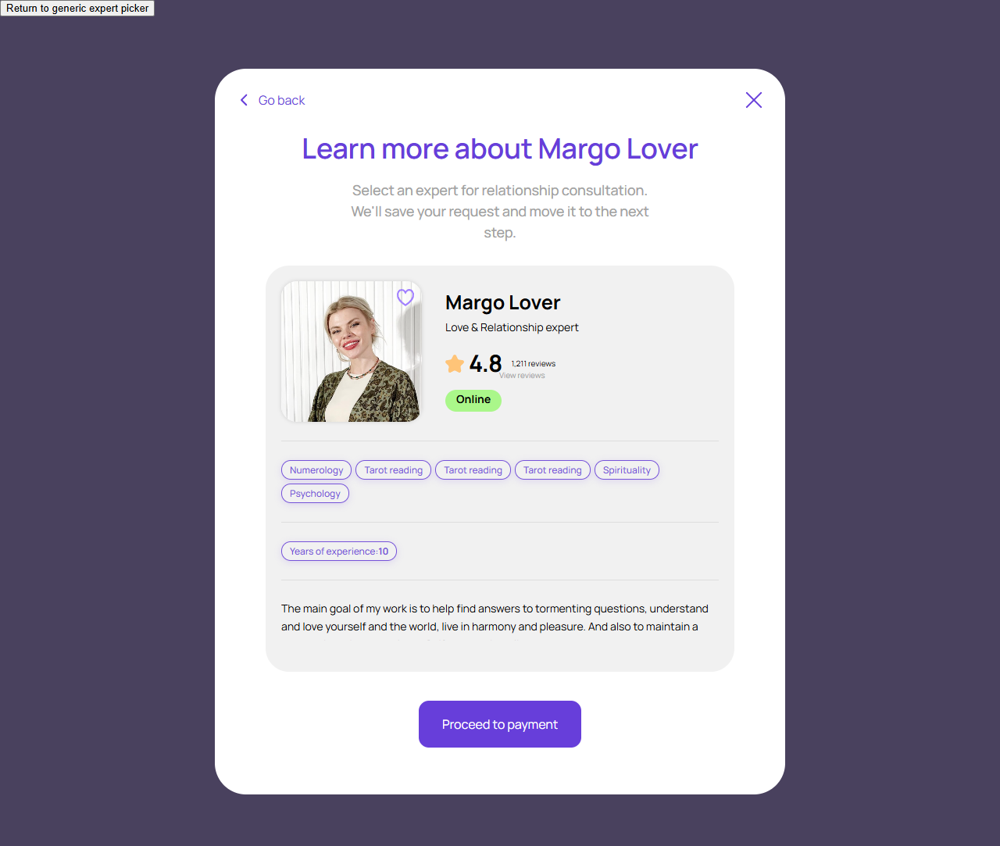
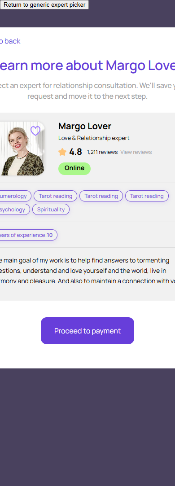

Подробности выбранного эксперта
account/expert-picker-details.html
Изучить эксперта до продолжения.
| Когда открывается | Карточка подбора |
|---|---|
| Данные | Анкета; рейтинг; отзывы; ставка; availability; favorite. |
| Сценарий | Back возвращает выбор; отзывы открывают свои данные эксперта; Proceed to payment выполняет проверку средств и предложение. |
| Переходы | Подбор эксперта · Пополнение перед началом · Вопрос перед консультацией |
Общая и предметная логика. Снимки и подписи элементов — исходная редакция макета; поздние уточнения ТЗ имеют приоритет в своей области. Это не проверка текущего сайта.
Сопоставление с AskNebula
Существующие наблюдения 07–09.10.2026, без повторной проверки в этой передаче.
Наблюдался связанный standalone online-профиль, а не окно деталей внутри выбора с Back/Proceed to payment. View all reviews прокрутил к отзывам; More Reviews добавил 5 к исходным 5. Это не подтверждает наш picker-flow, оплату или старт чата; аналог целевого состояния остаётся непроверенным.
Состояние 1280 · 1280 × 1083


Элементы и ожидаемые действия
| Элемент | Название в макете | Действие | Ожидаемый результат |
|---|---|---|---|
| E001 Виден | Return to generic expert picker | Закрыть локальное окно или вернуться к инициатору; Stay отменяет намерение завершить. | Вернуть фокус и исходный контекст. Не выполнять оплату, удаление или Complete. При неизвестном результате платежа сначала сверить заказ. |
| E002 Виден | Go back | Закрыть локальное окно или вернуться к инициатору; Stay отменяет намерение завершить. | Вернуть фокус и исходный контекст. Не выполнять оплату, удаление или Complete. При неизвестном результате платежа сначала сверить заказ. |
| E003 Виден | Close | Закрыть локальное окно или вернуться к инициатору; Stay отменяет намерение завершить. | Вернуть фокус и исходный контекст. Не выполнять оплату, удаление или Complete. При неизвестном результате платежа сначала сверить заказ. |
| E004 Виден | Favorite intent for Margo Lover | Добавить/убрать конкретного эксперта из собственного избранного. | Подтвержденное состояние с сервера; ошибка возвращает прежнее. Перезагрузка сохраняет результат. |
| E005 Виден | View reviews | Явно выбрать конкретного эксперта или открыть его подробности. | Сохранить ID и показать выбранное состояние; Next/Start остаются отдельным действием. |
| E006 Виден | Proceed to payment | Продолжить сценарий «Подробности выбранного эксперта»: Back возвращает выбор; отзывы открывают свои данные эксперта; Proceed to payment выполняет проверку средств и предложение. | Сохраняются expertId/dialogId; вопрос, согласие, funding и operator Start не объединяются. Нажатие само не запускает платное время. |
Состояние 390 · 390 × 1083


Элементы и ожидаемые действия
| Элемент | Название в макете | Действие | Ожидаемый результат |
|---|---|---|---|
| E001 Виден | Return to generic expert picker | Закрыть локальное окно или вернуться к инициатору; Stay отменяет намерение завершить. | Вернуть фокус и исходный контекст. Не выполнять оплату, удаление или Complete. При неизвестном результате платежа сначала сверить заказ. |
| E002 Виден | Go back | Закрыть локальное окно или вернуться к инициатору; Stay отменяет намерение завершить. | Вернуть фокус и исходный контекст. Не выполнять оплату, удаление или Complete. При неизвестном результате платежа сначала сверить заказ. |
| E003 Виден | Close | Закрыть локальное окно или вернуться к инициатору; Stay отменяет намерение завершить. | Вернуть фокус и исходный контекст. Не выполнять оплату, удаление или Complete. При неизвестном результате платежа сначала сверить заказ. |
| E004 Виден | Favorite intent for Margo Lover | Добавить/убрать конкретного эксперта из собственного избранного. | Подтвержденное состояние с сервера; ошибка возвращает прежнее. Перезагрузка сохраняет результат. |
| E005 Виден | View reviews | Явно выбрать конкретного эксперта или открыть его подробности. | Сохранить ID и показать выбранное состояние; Next/Start остаются отдельным действием. |
| E006 Виден | Proceed to payment | Продолжить сценарий «Подробности выбранного эксперта»: Back возвращает выбор; отзывы открывают свои данные эксперта; Proceed to payment выполняет проверку средств и предложение. | Сохраняются expertId/dialogId; вопрос, согласие, funding и operator Start не объединяются. Нажатие само не запускает платное время. |